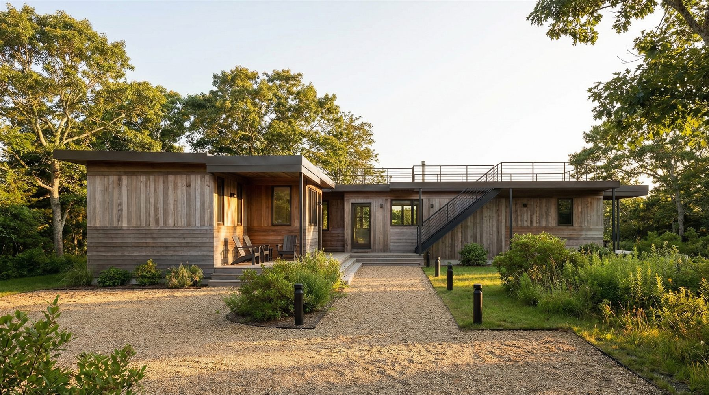
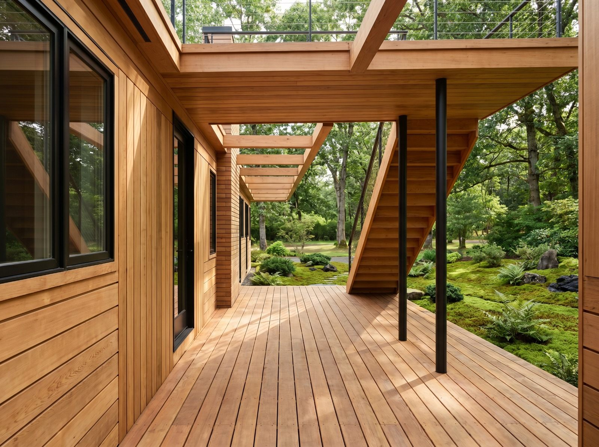
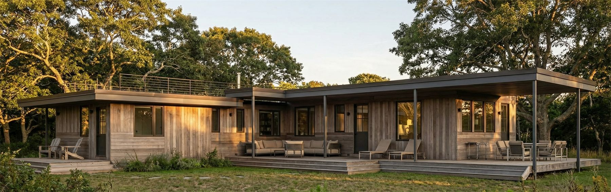
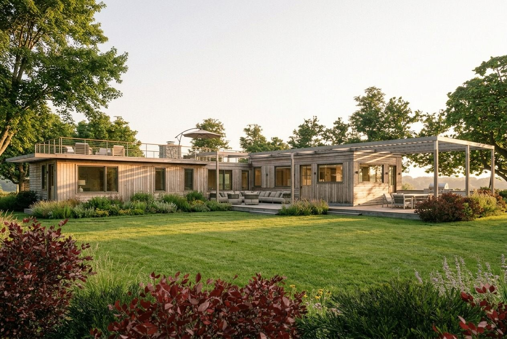
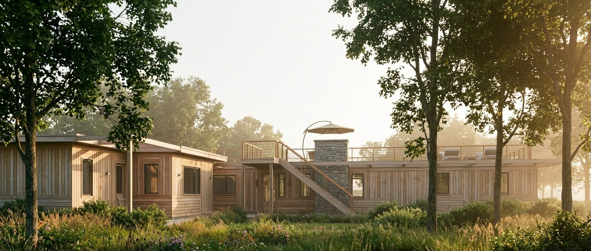
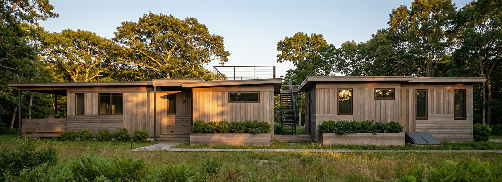
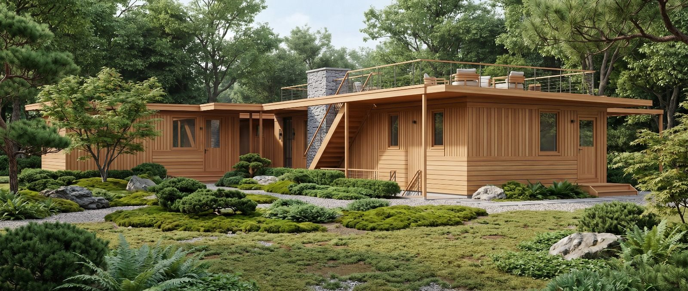
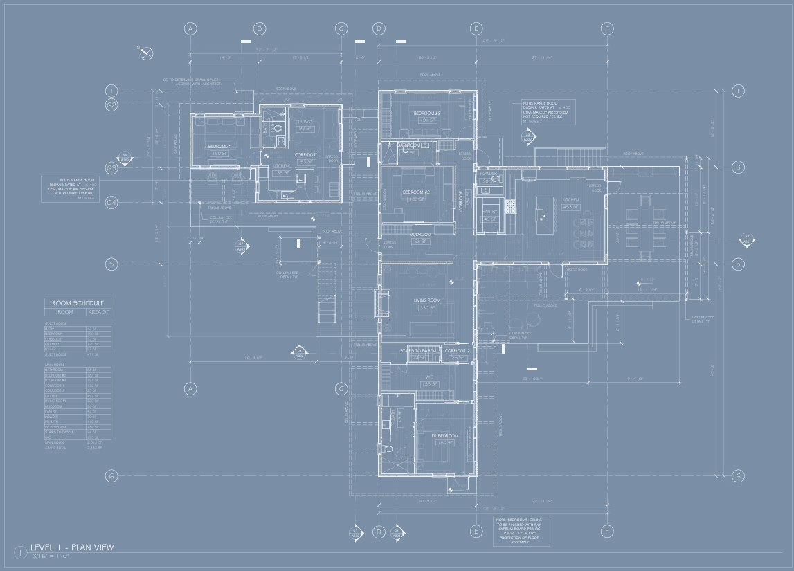
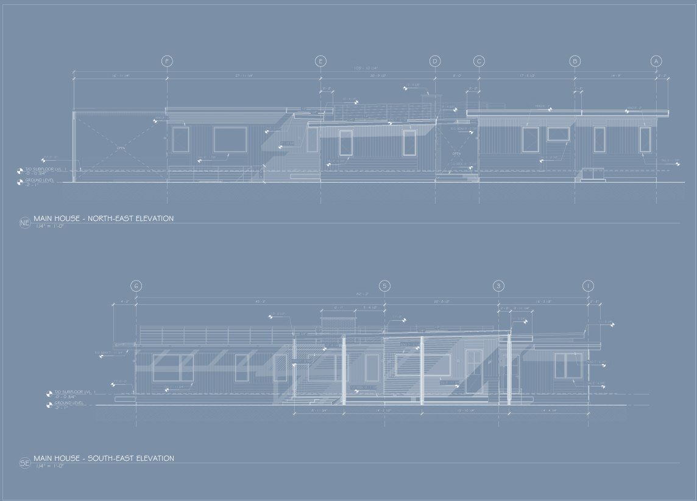
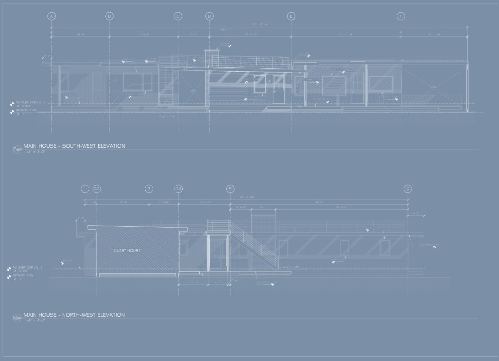

A home designed around its gardens.
This home sits in a time capsule of a neighborhood — a colony of 1960s raised ranches at the edge of Tisbury Great Pond. We were reluctant to demolish the existing house. It had character, and a split-level ranch is surprisingly spacious (who would have thought?). But a persistent leak at the center of the roof told a harder truth: fifteen years of hidden water damage, and rot and mold too extensive to save it. Thus began the design of a new home.
A Japanese-inspired home, where every square foot matters
Our inspiration drew from two sources: the community itself, and the architect's and owners' years in Japan. We wanted a house with multiple axes — sight lines reaching to the landscape features of the property and the fields beyond. The circulation traditions of Japanese architecture showed the way: the rouka, an interior hallway; the engawa, a wooden porch that wraps a building's corners; and the wataridono, the raised connecting bridge of zen temple compounds. Together they create sight lines, unfolding spaces, privacy, and connectedness — all within an 1,850 square foot home and a 550 square foot guest house.
The space unfolds along those axes. Roof lines lift at the public rooms. A courtyard shields a Japanese-inspired garden and a pod-like home office from the road that traces two sides of the property. The outdoor kitchen flows directly from the kitchen. A children's wing and a parents' wing sit apart from one another, each opening off the shared spaces, and the kitchen and living room stay in easy communication while remaining distinct rooms.
The house dances around the modern open plan — but with the privacy and quiet of more traditional American and Japanese space planning. Every space serves more than one purpose; every corner is designed. It epitomizes what we believe: smaller and beautiful living, outdoor rooms that blur the boundary between inside and out, and the possibility of doing more with less.









